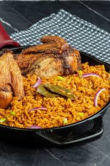

Home
Jollof-rice

Description
This jollof rice recipe is a vibrant, one-pot West African classic. Perfect for gatherings, it brings a flavorful kick and comforting aroma to the table.
Inspired by traditional Nigerian cooking, it’s quick to prepare and pairs beautifully.
ingredients
- >2 cups long grain parboiled rice
1/2 cup tomato paste
- 2–3 fresh tomatoes, blended
- 1–2 red bell peppers, blended
- 1 onion, chopped
- 2–3 tablespoons vegetable oil
- 2 cups chicken or beef stock (or water if none available)
- 2 seasoning cubes (like Maggi or Knorr)
- 1 teaspoon curry powder
- 1 teaspoon thyme
- 1–2 bay leaves
- Salt, to taste
steps
- Rinse the parboiled rice thoroughly in cold water and set aside.
- Blend the fresh tomatoes, bell peppers, Scotch bonnet, and one onion into a smooth paste.
- Heat vegetable oil in a pot and sauté chopped onions until translucent.
- Add tomato paste to the pot and fry for 3–5 minutes to reduce the sourness.
- Pour in the blended pepper mixture and cook until the liquid reduces and the sauce thickens.
- Season the sauce with curry powder, thyme, seasoning cubes, bay leaves, and salt to taste.
- Add chicken or beef stock and stir well. Bring the mixture to a gentle boil.
- Pour in the rinsed rice and stir so the grains are fully coated with the sauce.
- Reduce the heat, cover the pot with a tight lid or foil, and let the rice cook slowly by steaming.
- Check and stir occasionally to prevent burning. Add a splash of water or stock if needed.
- Once the rice is soft, remove the lid and let it steam uncovered for a few minutes to dry out slightly.
- Fluff the rice with a fork, serve hot, and garnish with fried plantains or grilled chicken if desired.